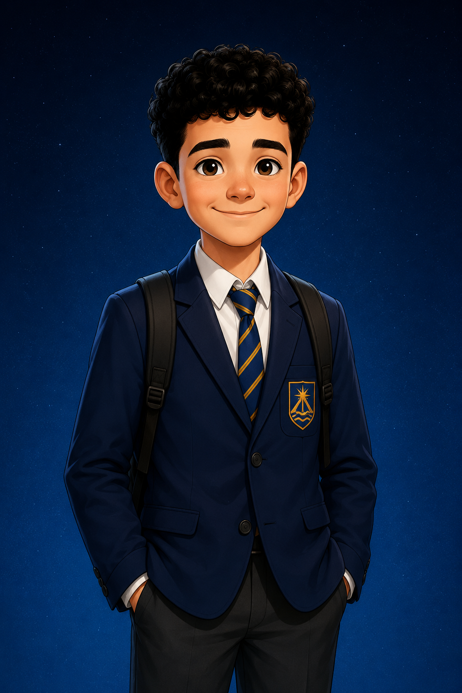
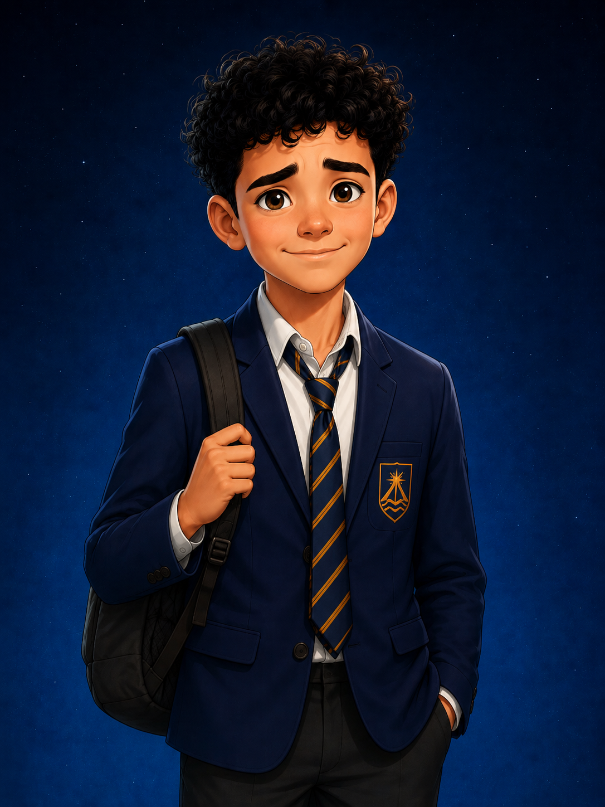
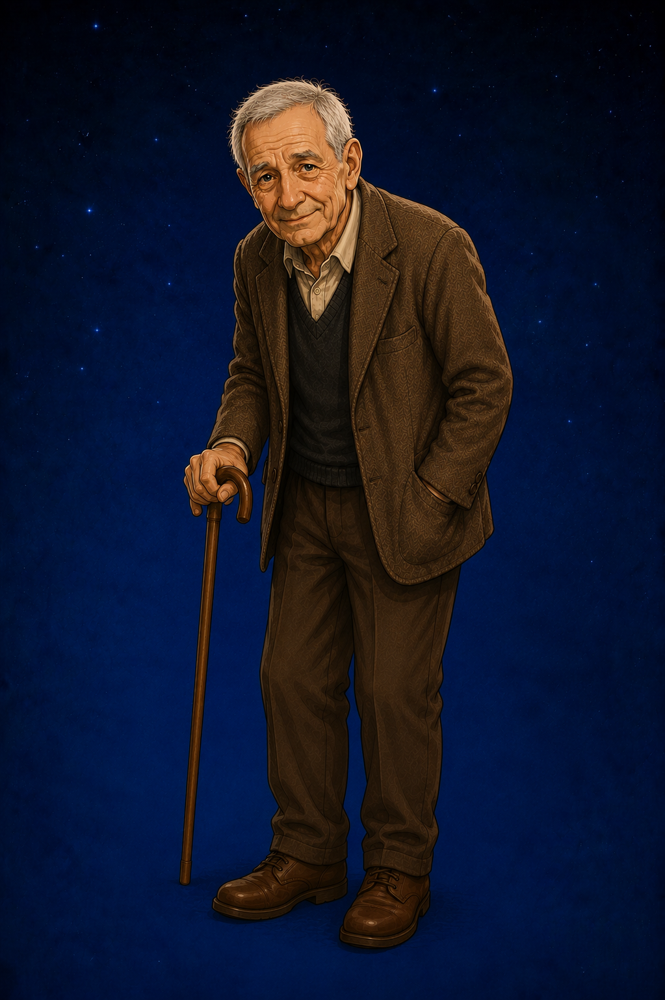

ROLE
Science Teacher
Encourages pupils to explore, experiment and question the world around them.
SCIENCE TEACHER
“A good question can be more interesting than the answer.”
Science Teacher. Curious, enthusiastic and always ready with another question. Mr Bell believes science isn't about knowing all the answers—it's about being brave enough to keep asking why.
WHO IS MR BELL?
Mr Bell teaches science with an enthusiasm that encourages his pupils to look at the world differently. For him, every experiment begins with curiosity and every unexpected result is another opportunity to learn.
He enjoys asking questions that make his class think rather than simply giving them the answers. Even the strangest ideas are worth discussing if they lead somewhere interesting.
In Mr Bell's classroom, getting something wrong isn't the end of an experiment. Sometimes it's the moment when the most interesting discoveries begin.
AT A GLANCE
ROLE
Encourages pupils to explore, experiment and question the world around them.
TEACHING STYLE
Mr Bell would rather hear an interesting question than an answer learned simply because it was written in a textbook.
FAVOURITE WORD
One small word that can lead to experiments, discoveries and occasionally considerably more mess than expected.
KNOWN FOR
A lesson with Mr Bell can begin with one simple question and end somewhere nobody in the class expected.
STORY APPEARANCES
Jake is the narrator and central character of the This Is My... series.
ENCOURAGING CURIOSITY
Mr Bell believes the best lessons happen when pupils are prepared to think for themselves. Whether discussing the mysteries of the universe or the science behind everyday life, he encourages curiosity at every opportunity.

PUPIL
Mr Bell appreciates Jack's thoughtful approach to science. His willingness to ask difficult questions often leads to some of the class's most interesting discussions.

PUPIL
Jake's answers don't always follow the scientific method, but his enthusiasm and imagination ensure Mr Bell's lessons are never short of unexpected moments.

COLLEAGUE
Although they teach different subjects, both believe that asking questions is just as important as learning the answers. Together they encourage pupils to think beyond the textbook.
Inspiring Scientific Curiosity
Mr Bell reminds his pupils that science begins with curiosity. The world is full of mysteries, and sometimes the first step towards understanding one is simply asking why.
Meet the Rest of the Cast